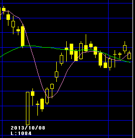
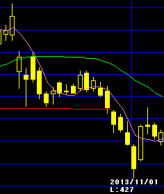
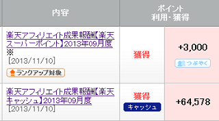

ヤフー無料化後の株価のゆくえ
先月はヤフーの手数料無料化が話題になってましたが、１か月が経過した現在、楽天の株価はほぼ穴埋め状態まで回復してきているようです。一方、yahooの株価はというと今のところはまだ回復してきておりません。
前回の記事はこちら。
ヤフー出店に手数料無料化の動き...
【4755】楽天

【4689】ヤフー

さすがにヤフーの株価が下げ過ぎている感もありますが、無料化により今後は手数料的な収益は入ってこなくなるので、株価が下がるのは致し方ないのかもしれません。広告収入での収益化が見込まれているようですが、まだ先のようです。
一方の楽天ですが、現在のところ株価がほぼ回復してきていますので、業績に与える影響は限定的というのが市場の反応のようです。また、この間、貸借倍率がかなり良くなってきていますので、一旦は暴騰するのではないかという印象さえ出てきております。
ただ、優勝セールの価格偽装問題が尾を引きそうですし、医薬品をめぐるネット販売の問題などもあります。加えて、マー君の移籍問題などもあり、どちらに反転してもおかしくありません。
個人的には、サイトを運営しているアフィリエイターからしてみますと、ヤフーショップよりも楽天ショップの方が稼ぎやすいという印象が強いです。ちょうど本日は楽天アフィリエイトの報酬日だったのですが、6万ポイントぐらいは入ってきており、楽天ではご紹介してもある程度は物が売れ、稼ぎやすいという印象があります。

一方、ヤフーにはバリューコマースというアフィリエイトがあり、こちらの方もわたしはやっておりますが、ヤフーショップで稼いだという記憶はあまりありません。
報酬額自体でいえば、バリューコマースの方が楽天よりもぜんぜん多いのですが、それはヤフーショップ以外で稼いだ報酬分ですので、ショップでの報酬という面でみれば楽天の方が反応が良いという印象が強いのです。
そのようなイメージがあったので、ヤフーのEC革命で楽天の株価が急落した際、わたしはしょぼい資産を全力でぶっこんでみたのですが、今のところはこれが功を奏しているようです。
次回はモバイルアフィリ広告の関連銘柄に全力でぶっこんでみようと思っているのですが、こちらの銘柄選びには迷いがありまして、またブログを更新しながら調査してみようと思ってます。
Facebookの増収やツイッターの上場、あるいはラインのモール関連など、興味深いイベントが目白押しみたいですね...。